The Pickle Rick machine was fully compromised through a chain of information disclosure and command injection vulnerabilities. Cleartext credentials were recovered from the web application’s HTML source code and robots.txt file, granting access to an authenticated command execution panel. A weak command blacklist was bypassed using alternative file-reading utilities. The web server process (www-data) was configured with unrestricted passwordless sudo access, enabling immediate escalation to root. An attacker with this level of access would have full control of the server — including the ability to read all files, install persistence mechanisms, pivot to other hosts on the network, and exfiltrate sensitive data.
Reconnaissance
Objective
Identify open ports, running services, and the target operating system to map the attack surface.
Findings
An Nmap service and OS detection scan revealed two open ports: SSH on port 22 running OpenSSH 8.2p1 on Ubuntu, and HTTP on port 80 running Apache 2.4.41. Nmap could not find an exact OS match but service info confirmed the target is running Linux. With only two services exposed, the HTTP server was the primary target for further enumeration.
PoC:
- Tools used: Nmap
- Command: nmap -sV -O <TARGET_IP>
- Result: Two open ports — 22/tcp (OpenSSH 8.2p1 Ubuntu) and 80/tcp (Apache httpd 2.4.41). No exact OS match; service info confirmed Linux.
Navigating to the web server on port 80 presented a themed page requesting help finding three secret ingredients — confirming this is the target application.
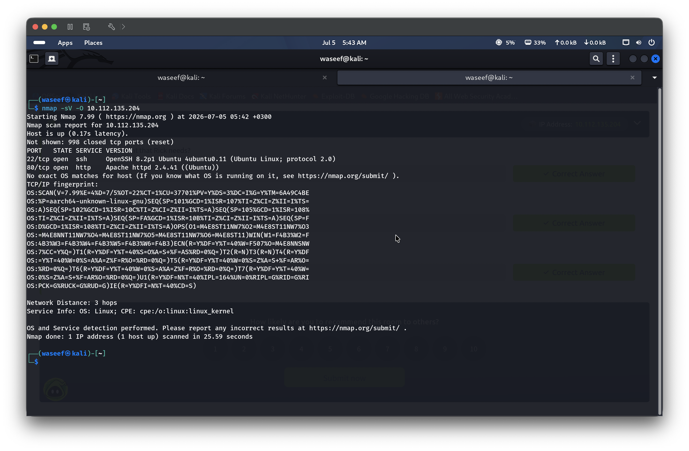
Enumeration
Objective
Discover hidden content, credentials, and additional attack surface on the web application.
Findings
Source Code Inspection
Viewing the page source revealed an HTML comment containing a username in cleartext — a common developer oversight where debug or reminder comments are left in production code.
PoC:
- Tools used: Browser
- Command: View page source (Ctrl+U)
- Result: HTML comment containing a username in cleartext [REDACTED]
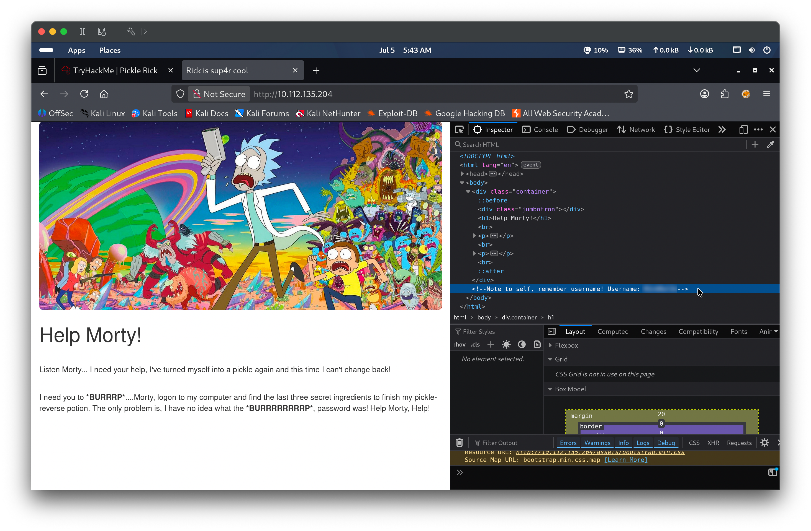
Directory and File Enumeration
Gobuster was used to brute-force directories and files with php and html extensions. The scan revealed several interesting endpoints: /login.php (a login form), /portal.php (redirecting to login — suggesting authenticated content behind it), /robots.txt, and /denied.php. The /server-status endpoint returned 403 Forbidden.
The robots.txt file contained a single string that did not correspond to any directory or user-agent — instead, it appeared to be a password. Combined with the username found in the page source, this formed a complete credential pair.
PoC:
- Tools used: Browser
- Command: Navigate to http://<TARGET_IP>/robots.txt
- Result: Single string identified as a potential password [REDACTED]
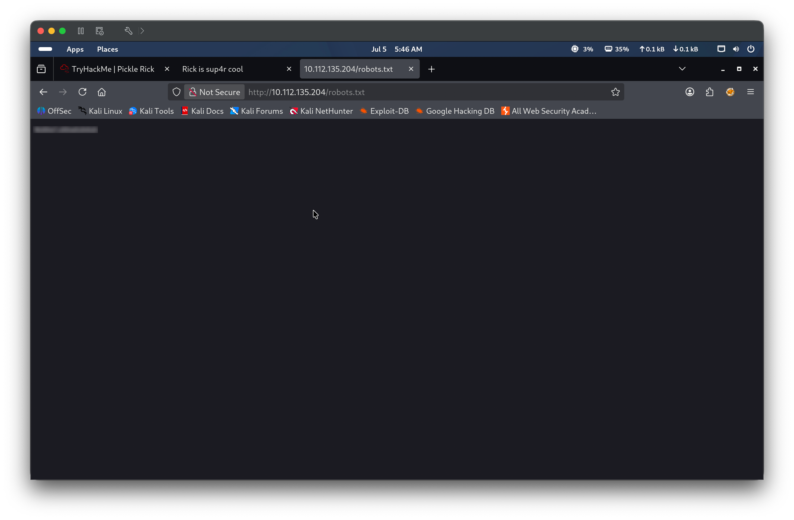
SSH Login Attempt (Failed)
Before using the credentials on the web application, an SSH login was attempted to test credential reuse. The connection was rejected with “Permission denied (publickey)” — the server only accepts public key authentication and does not allow password-based logins. This eliminated SSH as a viable entry point.
The credentials discovered during enumeration were used to log in to /login.php. After authentication, a “Command Panel” was presented at /portal.php — a web-based interface that directly executes OS commands on the underlying server. This constitutes a command injection vulnerability, as user input is passed to the system shell without adequate sanitization. A command blacklist blocks certain utilities like cat, but the filter is trivially bypassed using alternatives such as less or strings.
PoC — Steps to Reproduce
Navigate to http://<TARGET_IP>/login.php and authenticate with the discovered credentials
The Command Panel at /portal.php accepts arbitrary OS commands
Run ls to list the working directory — reveals several files including the first ingredient file and a clue file
Run cat Sup3rS3cretPickl3Ingred.txt — blocked by a “Command disabled” filter
Run less Sup3rS3cretPickl3Ingred.txt — bypasses the blacklist and retrieves the first ingredient
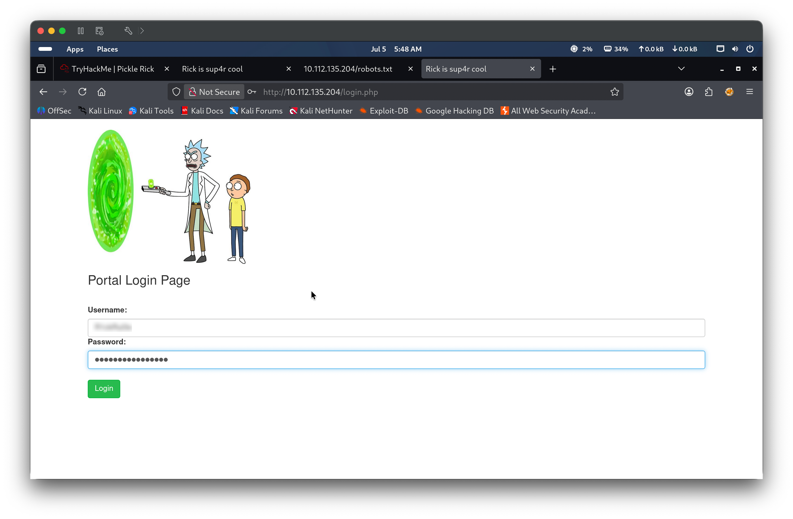
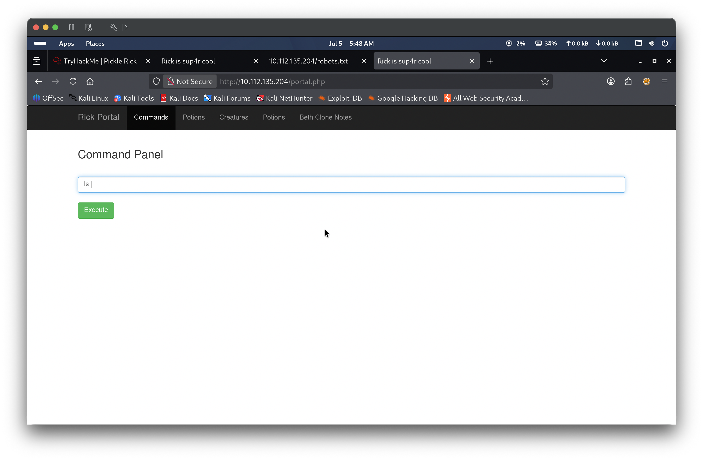
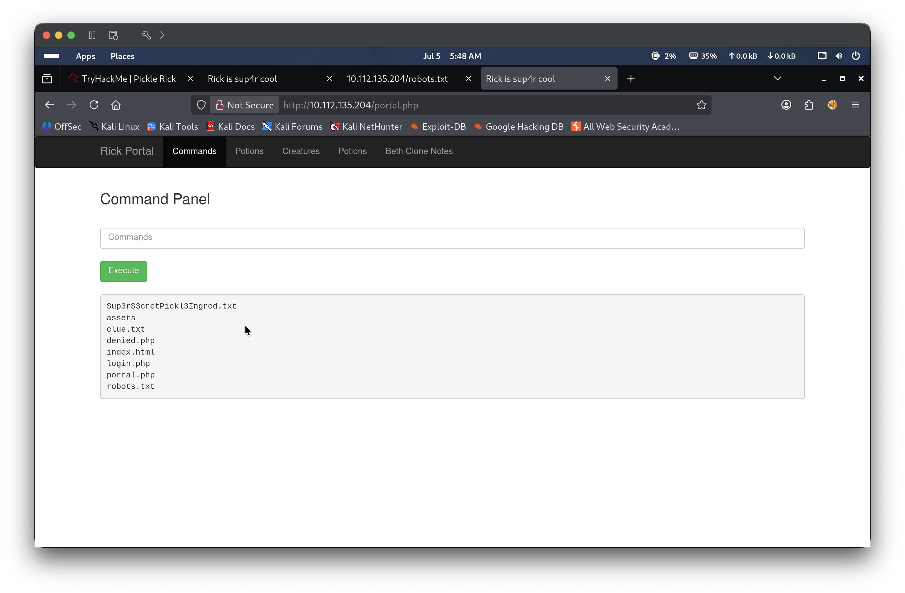
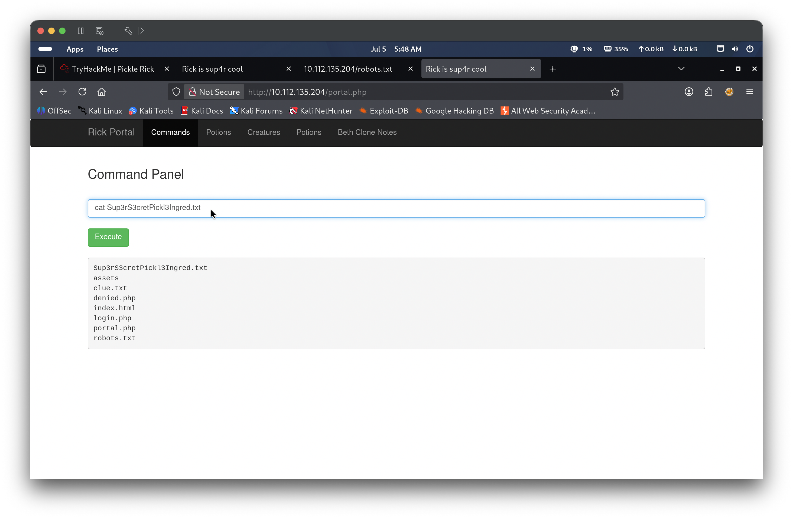
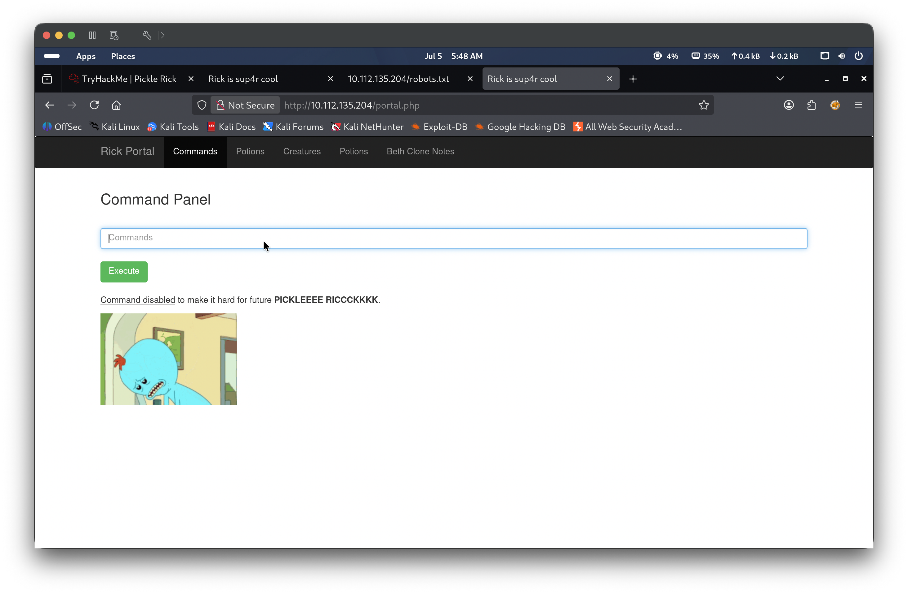
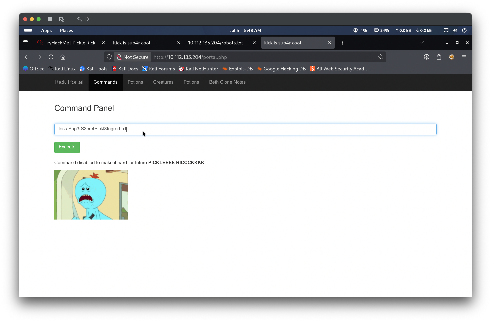
Ingredient 1
Retrieved from a text file in the web server’s working directory.
Post-Exploitation — File System Exploration
Objective
Explore the file system to locate the remaining ingredients, guided by the clue file found during exploitation.
Findings
The clue file hinted to look elsewhere on the file system. Enumerating /home revealed two user directories. The second ingredient was found in a file within one of those directories, readable by the www-data user without any privilege escalation — indicating overly permissive file permissions.
PoC — Steps to Reproduce
Run less clue.txt — returns a hint to explore the file system
Run ls /home — discovers two user directories: rick and ubuntu
Run ls /home/rick — finds a “second ingredients” file
Run less "/home/rick/second ingredients" — retrieves the second ingredient
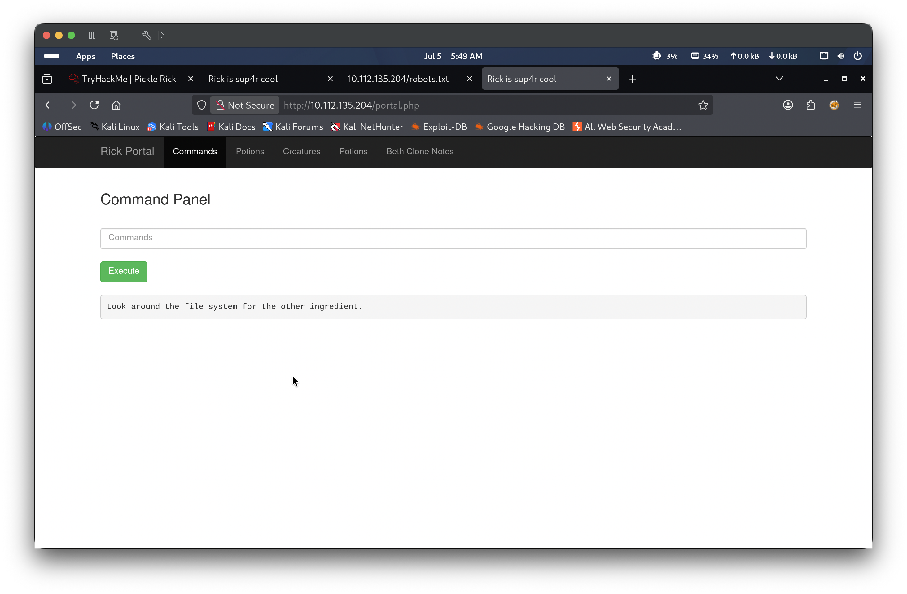
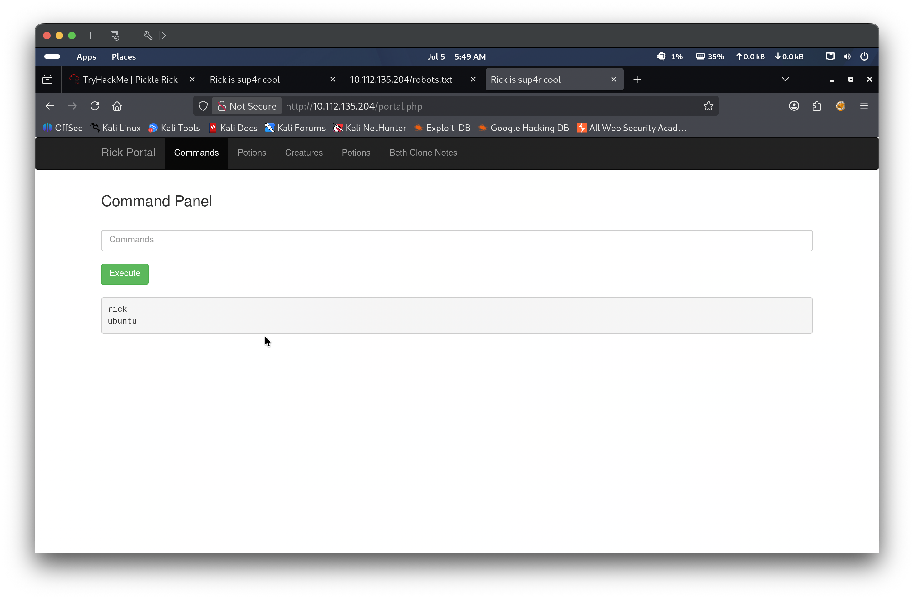
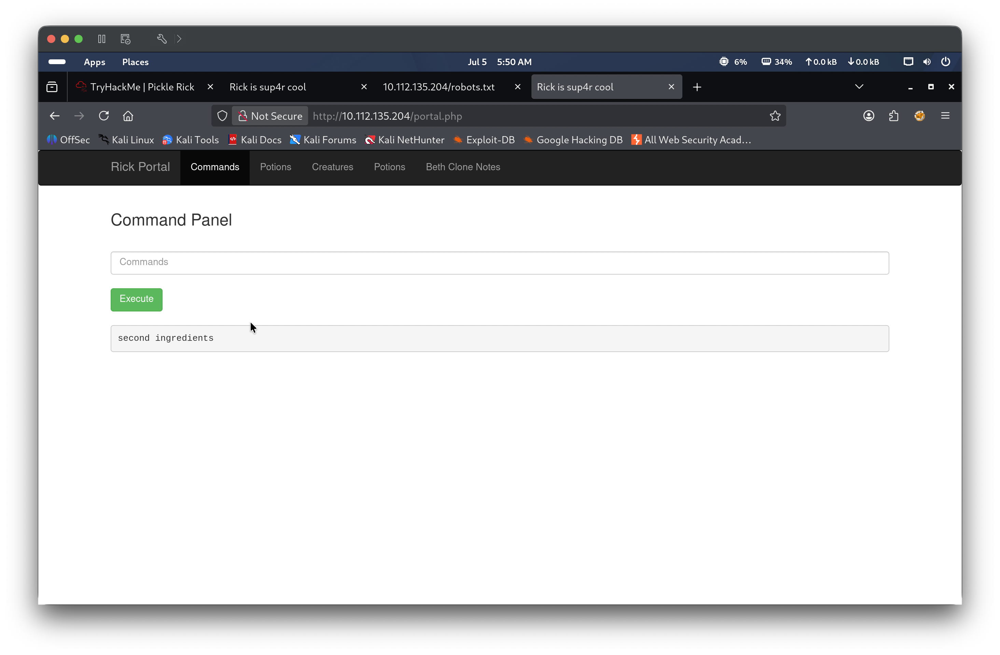
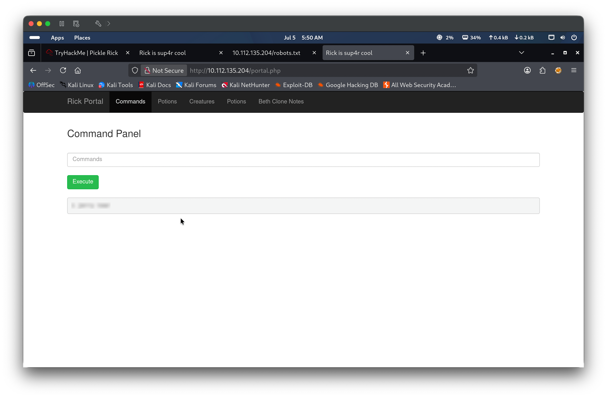
Ingredient 2
Retrieved from a file in a user’s home directory, accessible without elevated privileges.
Privilege Escalation
Description
Running whoami confirmed the command panel executes as www-data. Checking sudo permissions revealed that www-data can run any command as any user without a password ((ALL) NOPASSWD: ALL) — a critical misconfiguration that grants the web server process full root-equivalent access. This allowed reading the final ingredient from /root without needing to spawn a root shell or exploit any additional vulnerability.
PoC — Steps to Reproduce
Run whoami — confirms current user is www-data
Run sudo -l — reveals (ALL) NOPASSWD: ALL
Run sudo ls /root — lists the root directory, identifies 3rd.txt
Run sudo less /root/3rd.txt — reads the final ingredient
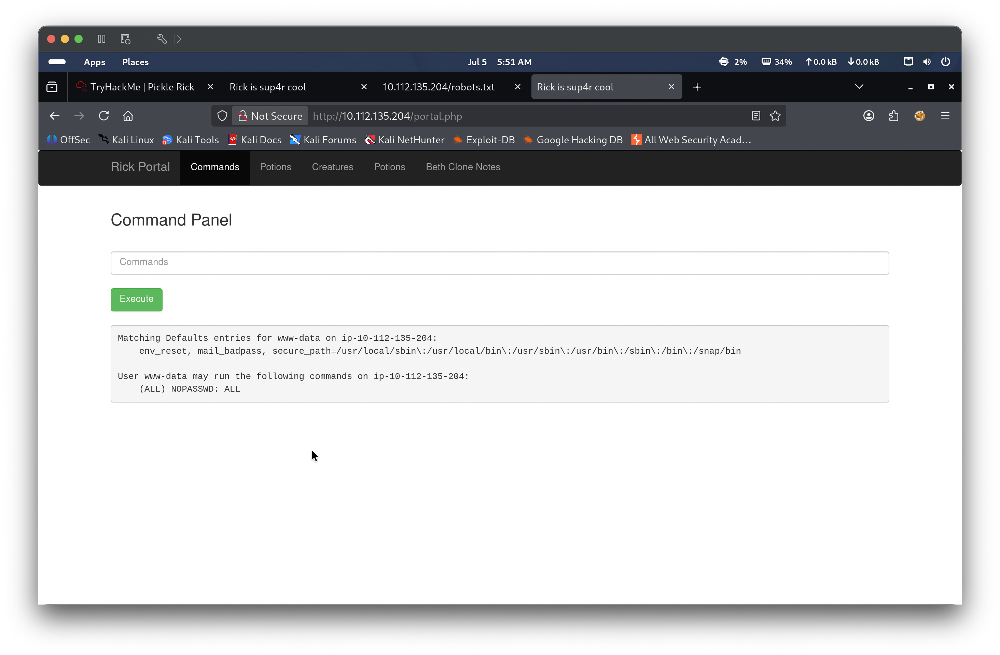
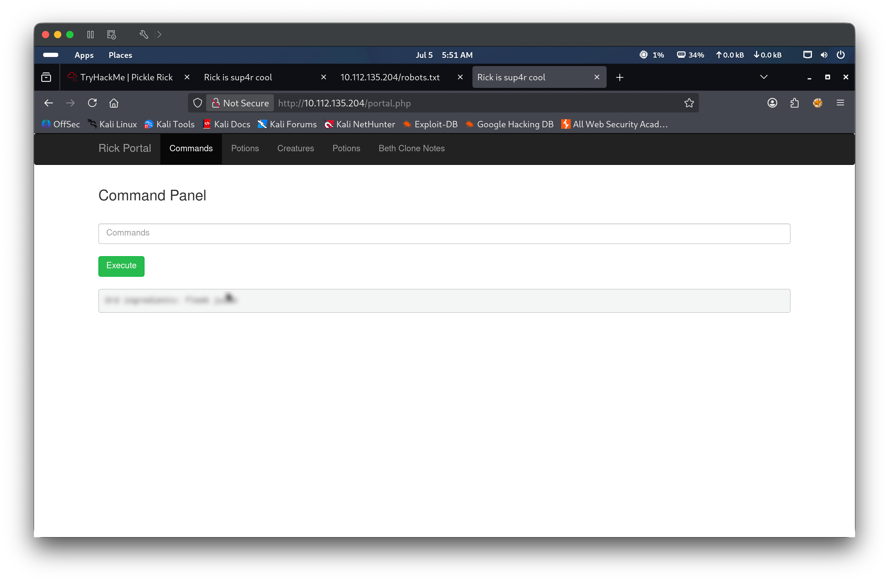
Ingredient 3
Retrieved from a file in /root via sudo.
Lessons Learned
Credentials in source code and robots.txt — the username and password were stored in two publicly accessible locations: an HTML comment and robots.txt. In real engagements, always inspect page source, JavaScript files, comments, and common metadata files (robots.txt, sitemap.xml, .git/) for leaked credentials or internal information.
Authentication method matters for credential reuse — the SSH server rejected password authentication entirely (publickey only), so the discovered credentials were only useful against the web login. When testing credential reuse, understanding the authentication mechanism of each service determines whether the credentials are even applicable.
Blacklist-based input filtering is inherently weak — blocking cat while leaving less, strings, head, tail, tac, nl, awk, sed, and dozens of other file-reading utilities unfiltered renders the blacklist useless. Effective command restriction requires whitelisting allowed commands, not blacklisting dangerous ones.
Unrestricted sudo for service accounts is a critical finding — www-data having NOPASSWD: ALL means any command injection vulnerability instantly becomes full root compromise. Web server processes should run with minimal privileges and never have sudo access. In a real engagement, this would be flagged as critical severity requiring immediate remediation.
File permissions reveal defense-in-depth failures — the second ingredient was readable by www-data without sudo, meaning even without the sudo misconfiguration, sensitive data in user home directories was accessible to the web server. Proper file permissions would have contained the impact of the initial compromise.